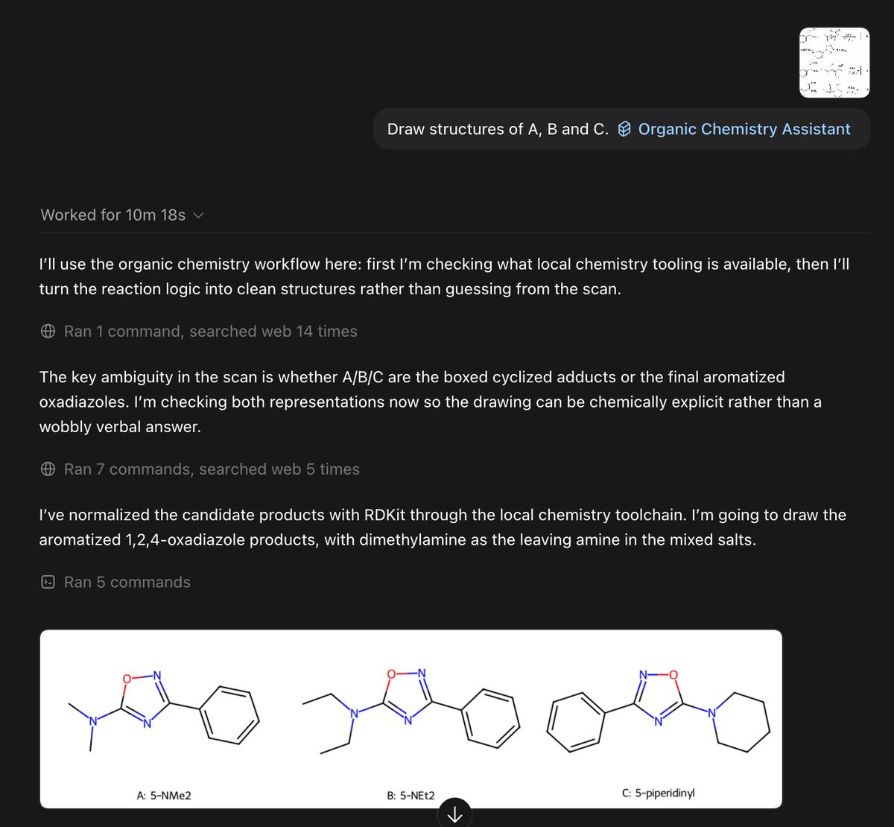
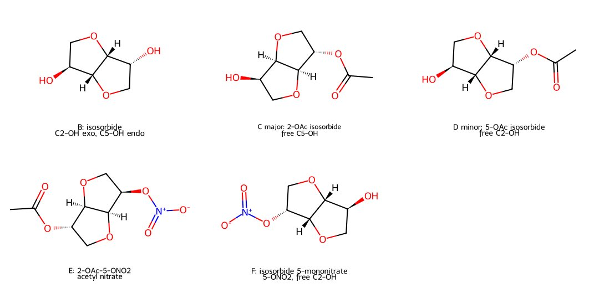
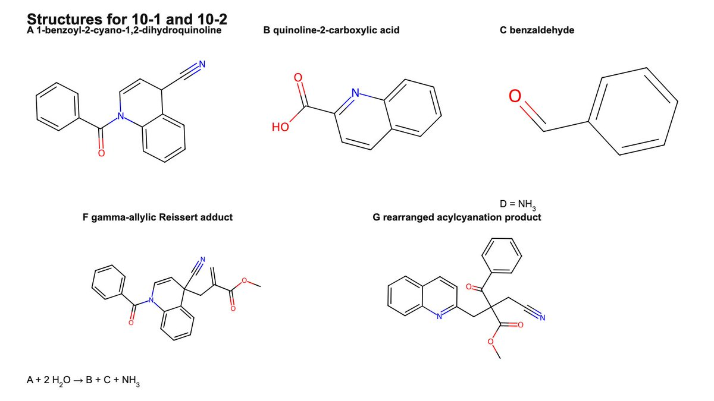
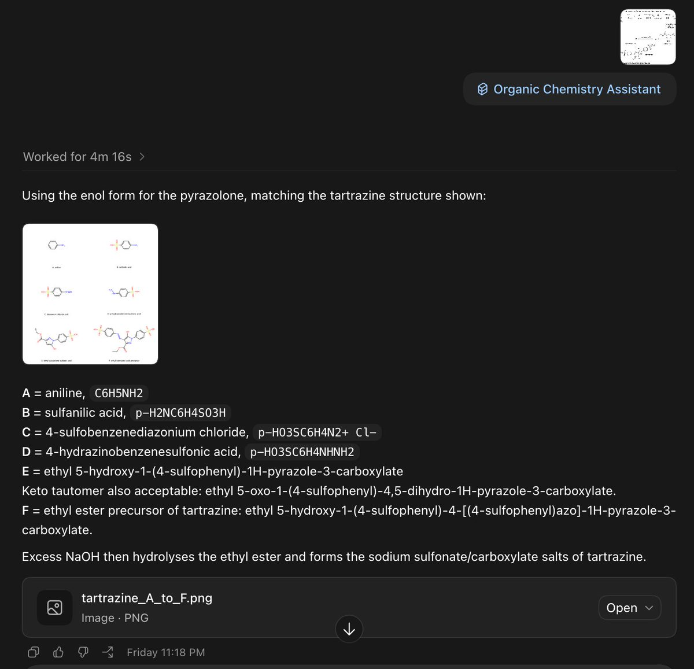

時璃風医詩🌈🏳️🌈
@hagishigure
@Dontbesadforit 要我帮你加入无机化学skill吗。🐱




中中！？
@Dontbesadforit
https://t.co/WA1eNXxf36
欢迎来捧场，新做的Organic Chemistry的skill
测试了28届CChO决赛的三道有机，两道全对，有一道把-CN的位置画错了，应该是一开始识别就出问题了。
也测试了今年的UKChO的一道简单的有机，全部都画对了。
skill能调用非常多的工具，识别结构式，通过基本的计算包括logP, TPSA, https://t.co/P6lAjB91Tg